Столица с тысячелетней историей: старые кварталы, университеты и тихие озёра. Ханой — политический и культурный центр, где сочетаются рынки, пагоды и гастрономия уличной еды.
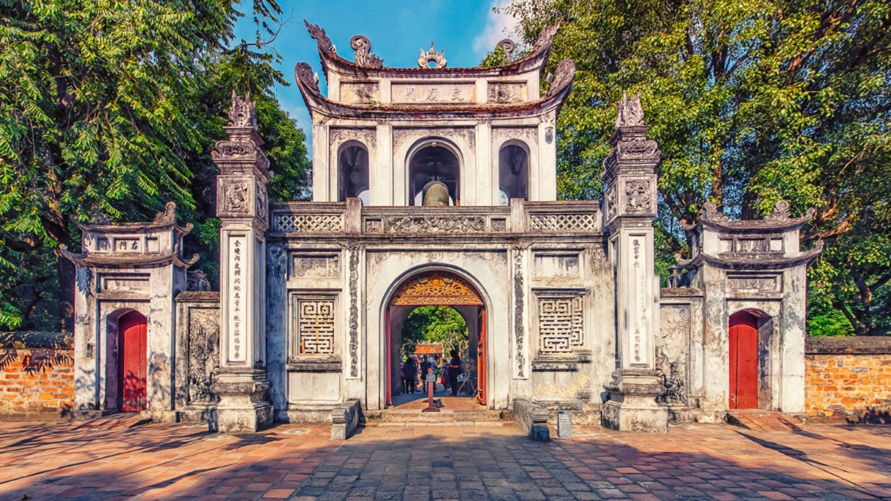
Уникальная школа и символ образовательной традиции.
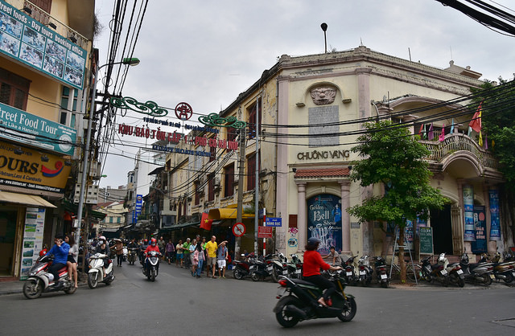
Лабиринт улочек с ремесленниками, кафе и яркой уличной жизнью.
Бывший Сайгон — деловой и культурный мотор страны. Город живёт рынками, небоскрёбами и оживлёнными улицами; сочетает французскую архитектуру и современные бизнес-центры.
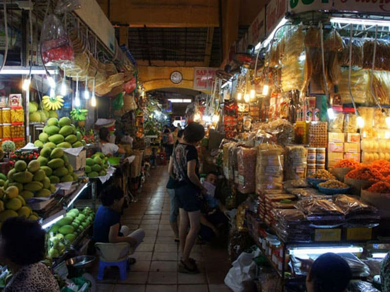
Место для специй, сувениров и местной кухни.
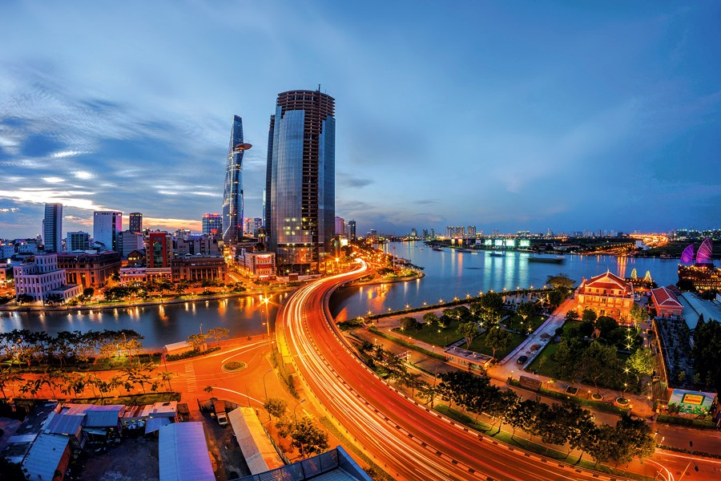
Финансы, стартапы и динамичная урбанистическая жизнь.
Прибрежный город с широкими пляжами и портом. Дананг — ворота к историческим городам региона и центру пляжного отдыха: Мраморные горы, мосты и современная набережная.
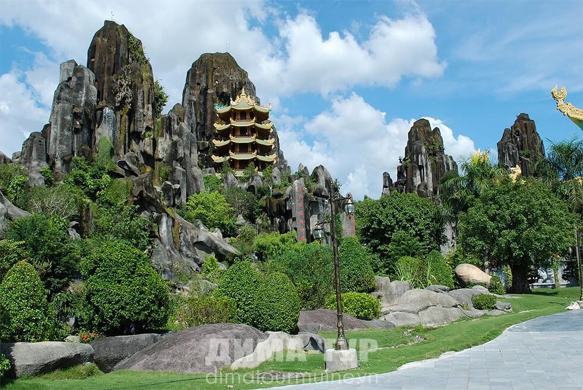
Пещеры, пагоды и живописные виды на побережье.
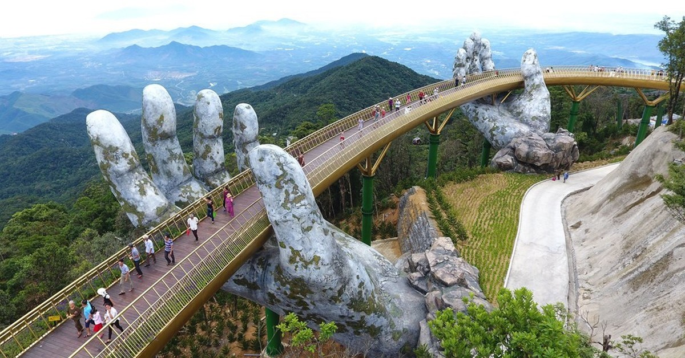
Руки выглядят так, будто высечены из камня и им сотни лет, но на самом деле они сделаны из стали и искусственно состарены.
Город династии Нгуен — культурная жемчужина и объект ЮНЕСКО. Тут расположены древние мавзолеи, цитадель и храмовые ансамбли, пропитанные историей и церемониями.
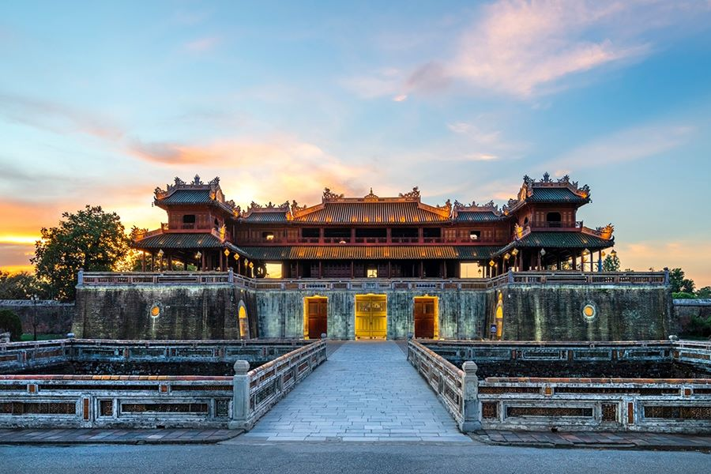
Императорский комплекс с дворцами и воротами.
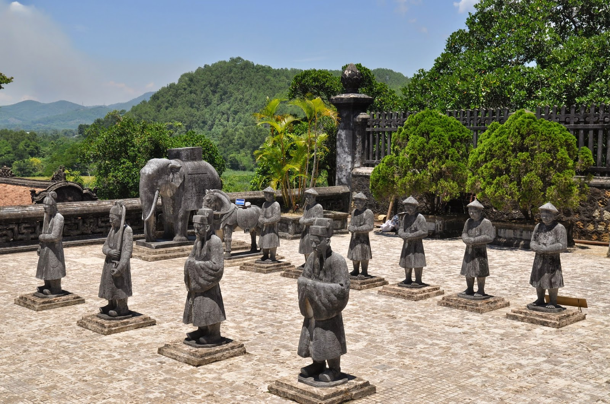
Монументальные мавзолеи в живописных парках.
Популярный пляжный город — дайвинг, острова и спа. Нячанг известен морской жизнью и свежими морепродуктами — идеален для пляжного отдыха и водных развлечений.
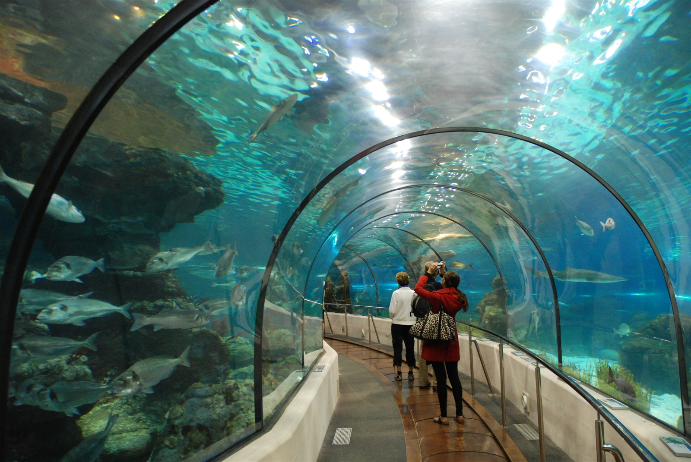
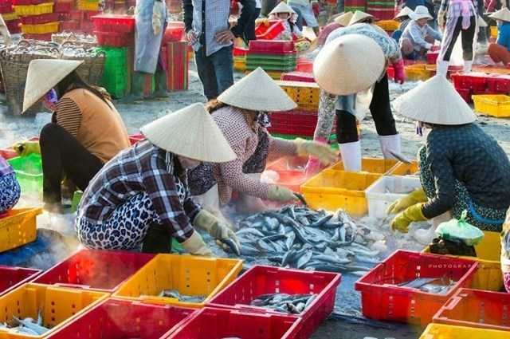
Песчаные дюны, ветровые виды спорта и спокойная прибрежная атмосфера. Муйне привлекает любителей кайт- и виндсерфинга, а также тех, кто ищет тихий пляжный отдых в необычном ландшафте.
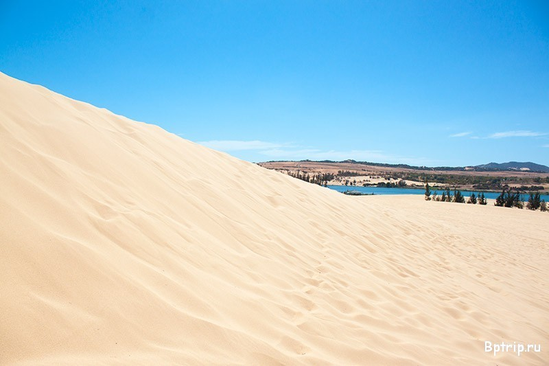
Песчаные просторы для прогулок и сэнбординга.
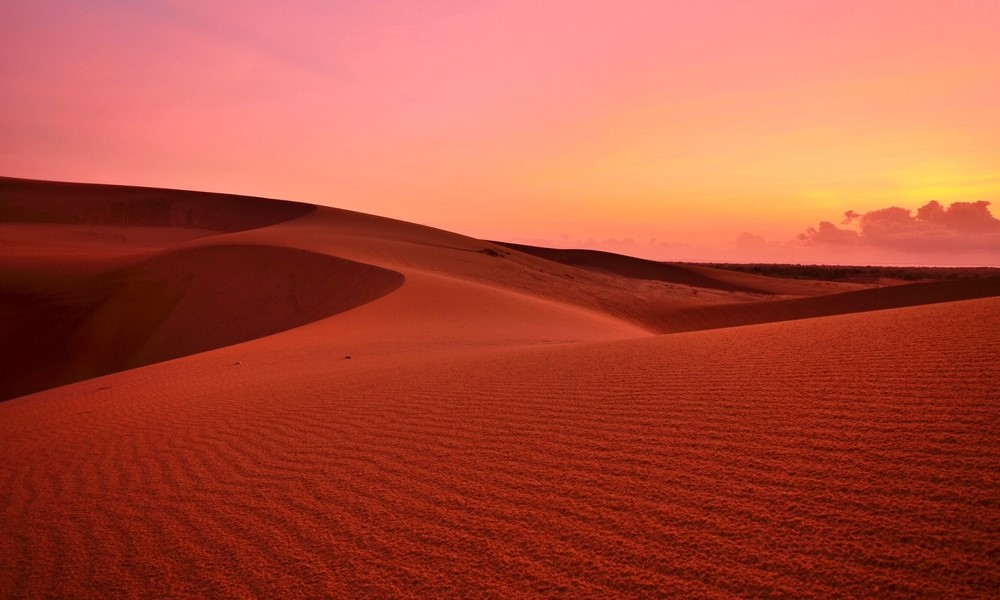
Знаменитые закаты и фотографические виды.
Горный район с туманными террасами и культурой народов Hmong и Dao. Идеально для треккинга, спотов с панорамными видами и знакомства с ремёслами и традициями северного Вьетнама.
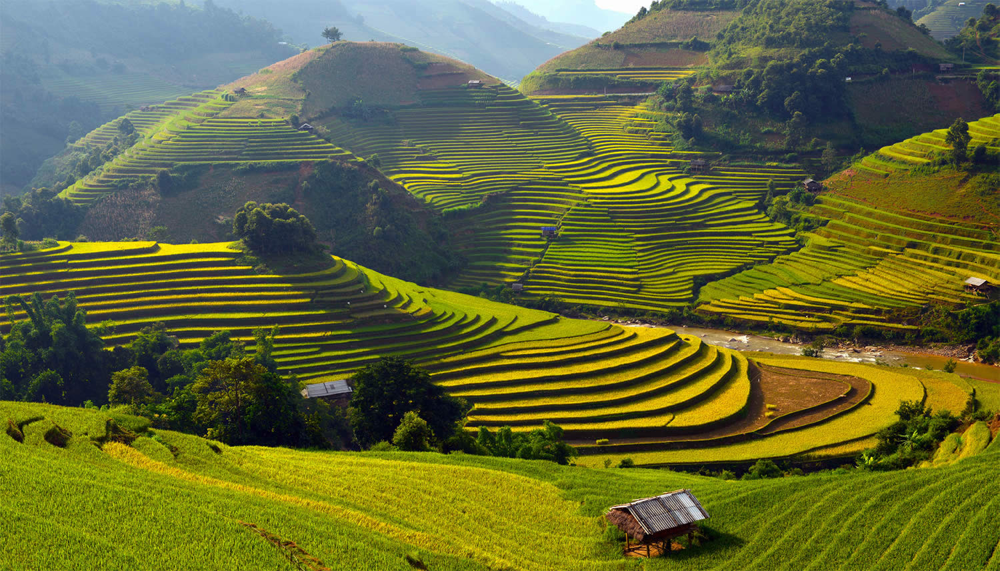
Маршруты разной сложности через рисовые террасы и горные деревни.
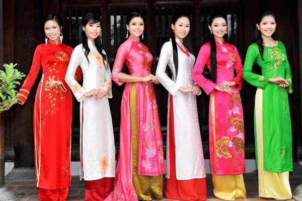
Ручные ткани, традиционные рынки и этнические костюмы.